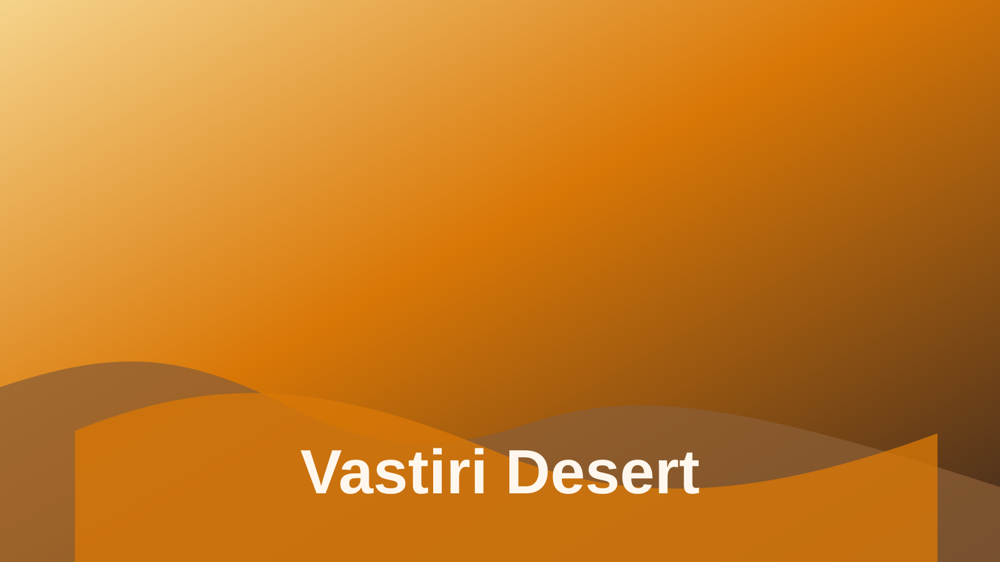

Project
Vastiri Desert
A world-building environment focused on scale, heat, and the storytelling potential of a harsh, sun-scorched landscape.
Overview
Vastiri Desert is a large-scale environment study built around the high-contrast drama of expansive dunes, baked sunlight, and dramatic atmospheric perspective. The project explored how scale and atmosphere communicate mood with minimal visual noise.
Production
Materials, weathering, and composition were carefully tuned to create a believable and cinematic desert environment. The result is a scene with strong sense of place, travel, and isolation.
Return to Projects